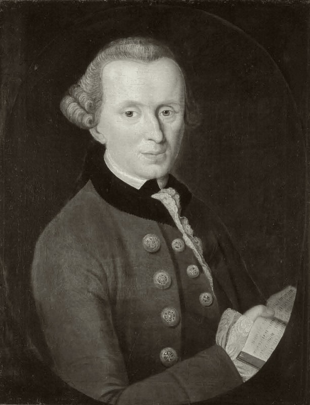

康德是近代哲学的集大成者、德国古典哲学的奠基人。他以"哥白尼式革命"重构认识论，以道德律令确立自由的尊严，以三大批判为现代哲学划定了基本框架。
康德的哲学以"批判"为名，为理性划定边界。以下八个概念构成其思想骨架——从认识论的哥白尼式革命出发，经过先验统觉的自我意识，抵达道德领域的绝对命令与目的王国，最后落到世界公民的永久和平理想。点击卡片进入详细解读。
“一切知识开始于经验，但并非都源于经验。”不依赖经验、又扩充知识的先天综合判断如何可能？这是康德认识论的枢纽问题。
认识论方向的彻底翻转——不是认识围绕对象，而是对象围绕认识。以认识形式为条件，理性为科学划出地盘。
我们只能认识显现于时空与范畴之中的现象，物自体（Ding an sich）不可知。认识论由此获得边界，科学由此获得地盘。
“我思”必须能够伴随我的一切表象——自我意识的统一是知识统一的最高原则，也是“我”之为我的先验结构。
义务的形式表达——“应当”不描述“是什么”，而规定“该做什么”。假言命令有条件，绝对命令无条件：道德法则的形态学。
“要只按照你同时能够愿意它成为普遍法则的准则去行动。”道德不是幸福的算计，而是对法则本身的尊重。
每个理性存在者都是目的王国的立法成员——既是公民，又是君主。人是目的，绝不只是手段。
以共和体制与自由国家的联盟结束战争状态，世界公民的法律秩序通向永久和平——理性的终极政治理想。
康德一生著作等身，但只有这五部构成理解其批判哲学的主干——从1781年《纯粹理性批判》的第一声惊雷，到1795年《永久和平论》的世界公民理想。三大批判分别回答"我能知道什么"与"我应做什么"，"我可以希望什么"则落实到宗教与道德哲学——两部道德与政治著作将其实践化。每部均含详细解读。
"先验哲学"的完成——先天综合判断如何可能？感性提供直观，知性为自然立法，理性在越界时陷入幻相。近代哲学由此彻底转向。
道德是理性的实践活动——义务、道德法则与自由在实践领域中互相证成。"头顶的星空"与"心中的道德律"在此交汇。
审美判断（无目的的合目的性）与目的论判断——美何以无需概念而普遍令人愉悦？自然的合目的性为科学与道德之间架起桥梁。
绝对命令的三种表述在此完整呈现——普遍法则、人是目的、自律立法。自由作为道德的条件，道德作为自由的展开。
从国家间的自然状态（战争状态）走向法治的和平联盟——六个先决条件、三条确定条款，现代国际政治哲学的奠基之作。
先读《纯粹理性批判》第二版序言与导言，理解"哥白尼式革命"与"先天综合判断"这两个枢纽概念。若感困难，可先读《未来形而上学导论》——康德为大众写的通俗版导论，或本站概念页的"先天综合判断""现象与物自体"两节，先把握问题的整体形状。
读《道德形而上学奠基》——篇幅最短却最完整地呈现了绝对命令的三种表述与自律概念。然后读《实践理性批判》的"分析论"部分，看道德律如何与自由互相证成。这两部构成康德伦理学的完整骨架。
读《判断力批判》导言与"审美判断力批判"前半部，理解"无目的的合目的性"。最后读《永久和平论》，看康德如何把批判哲学落实为世界政治蓝图。至此三大批判与两部实践著作构成完整的康德全景。
康德对现代性的定义，不在于某一项具体的学说，而在于他为一切可能的学说划定的边界。在他之前，哲学试图回答"世界是什么"；在他之后，哲学必须首先回答"我们能够知道什么"。这一提问方式的翻转，就是哲学史上的"哥白尼式革命"——知识不再围绕对象旋转，而是对象围绕我们的认识形式旋转。
边界划定了，自由也就确立了。正是因为我们无法把认识推进到物自体，才为道德、信仰与自由留下了空间——"我必须限制知识，以便为信仰留下地盘。"康德没有终结形而上学，而是规定了形而上学的合法方式：以道德为根据，以实践理性为立法者。现代人谈论的主体性、自律、宪政与永久和平，都在这套框架之内。
本站是为系统学习康德哲学而做的导读。内容以概念为骨架，以著作为血肉——概念页展开每个核心命题的定义、哲学阐述、实例与延伸思考；著作页逐部解读核心论点、结构要点和关键段落。康德难读是公认的，但难读不等于不可读；导读不能替代原典，但可以在你走进原典之前，把每一道门的位置与每一扇窗的方向先指给你看。